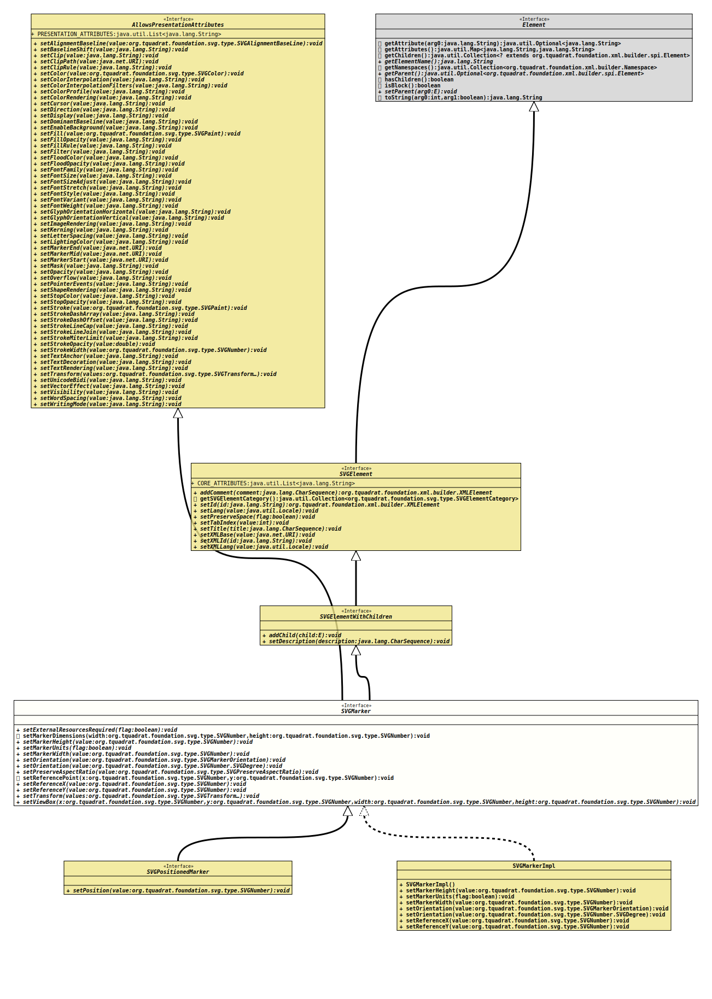

- All Superinterfaces:
AllowsPresentationAttributes,Element,SVGElement,SVGElementWithChildren
- All Known Subinterfaces:
SVGPositionedMarker
- All Known Implementing Classes:
SVGElementAdapter,SVGGenericElement,SVGMarkerImpl,SVGPositionedMarkerImpl
@ClassVersion(sourceVersion="$Id: SVGMarker.java 1074 2023-10-02 12:05:06Z tquadrat $")
@API(status=STABLE,
since="0.0.5")
public sealed interface SVGMarker
extends SVGElementWithChildren, AllowsPresentationAttributes
permits SVGPositionedMarker, SVGMarkerImpl
{kind=link}
The definition for the SVG
<marker> element.- Author:
- Thomas Thrien (thomas.thrien@tquadrat.org)
- Version:
- $Id: SVGMarker.java 1074 2023-10-02 12:05:06Z tquadrat $
- Since:
- 0.0.5
- UML Diagram
-

UML Diagram for "org.tquadrat.foundation.svg.SVGMarker"
{kind=link}
-
Field Summary
Fields inherited from interface org.tquadrat.foundation.svg.AllowsPresentationAttributes
PRESENTATION_ATTRIBUTESFields inherited from interface org.tquadrat.foundation.svg.SVGElement
CORE_ATTRIBUTES -
Method Summary
Modifier and TypeMethodDescriptionvoidsetExternalResourcesRequired(boolean flag) Sets the attribute that indicates whether external resources are required to render this<marker>element.default voidsetMarkerDimensions(SVGNumber width, SVGNumber height) Sets the width and the height of the viewport into which the<marker>is to be fitted when it is rendered.voidsetMarkerHeight(SVGNumber value) Sets the height of the viewport into which the<marker>is to be fitted when it is rendered.voidsetMarkerUnits(boolean flag) Sets the marker units attribute that defines the coordinate system for the attributes "markerWidth" and "markerHeight".voidsetMarkerWidth(SVGNumber value) Sets the width of the viewport into which the<marker>is to be fitted when it is rendered.voidSets the orientation of the marker.voidSets the orientation of the marker.voidSets the mode for the aspect ratio preservation for this<marker>element.default voidSets the reference point for the marker.
This is the location on the marker where it will be joined to its markable element.voidsetReferenceX(SVGNumber value) Sets the x coordinate of the marker reference point.voidsetReferenceY(SVGNumber value) Sets the y coordinate of the marker reference point.voidsetTransform(SVGTransform... values) Sets the transformations for this<marker>element.voidsetViewBox(SVGNumber x, SVGNumber y, SVGNumber width, SVGNumber height) Defines the visible area for this<marker>element.Methods inherited from interface org.tquadrat.foundation.svg.AllowsPresentationAttributes
setAlignmentBaseline, setBaselineShift, setClip, setClipPath, setClipRule, setColor, setColorInterpolation, setColorInterpolationFilters, setColorProfile, setColorRendering, setCursor, setDirection, setDisplay, setDominantBaseline, setEnableBackground, setFill, setFillOpacity, setFillRule, setFilter, setFloodColor, setFloodOpacity, setFontFamily, setFontSize, setFontSizeAdjust, setFontStretch, setFontStyle, setFontVariant, setFontWeight, setGlyphOrientationHorizontal, setGlyphOrientationVertical, setImageRendering, setKerning, setLetterSpacing, setLightingColor, setMarkerEnd, setMarkerMid, setMarkerStart, setMask, setOpacity, setOverflow, setPointerEvents, setShapeRendering, setStopColor, setStopOpacity, setStroke, setStrokeDashArray, setStrokeDashOffset, setStrokeLineCap, setStrokeLineJoin, setStrokeMiterLimit, setStrokeOpacity, setStrokeWidth, setTextAnchor, setTextDecoration, setTextRendering, setUnicodeBidi, setVectorEffect, setVisibility, setWordSpacing, setWritingModeMethods inherited from interface org.tquadrat.foundation.xml.builder.spi.Element
getAttribute, getAttributes, getChildren, getElementName, getNamespaces, getParent, hasChildren, isBlock, setParent, toStringMethods inherited from interface org.tquadrat.foundation.svg.SVGElement
addComment, getSVGElementCategory, setId, setLang, setPreserveSpace, setTabIndex, setTitle, setXMLBase, setXMLId, setXMLLangMethods inherited from interface org.tquadrat.foundation.svg.SVGElementWithChildren
addChild, setDescription
){kind=link}
){kind=link}
){kind=link}
){kind=link}
){kind=link}
){kind=link}
){kind=link}
){kind=link}
){kind=link}
){kind=link}
){kind=link}
){kind=link}
){kind=link}
){kind=link}
){kind=link}
){kind=link}
-
Method Details
-
setExternalResourcesRequired
Sets the attribute that indicates whether external resources are required to render this<marker>element.- Parameters:
flag-trueif external resources are needed,falseif all required resources are local to the current context.
-
setMarkerDimensions
Sets the width and the height of the viewport into which the<marker>is to be fitted when it is rendered.- Parameters:
width- The width.height- The height.- See Also:
-
setMarkerHeight
Sets the height of the viewport into which the<marker>is to be fitted when it is rendered.- Parameters:
value- The height.- See Also:
-
setMarkerUnits
Sets the marker units attribute that defines the coordinate system for the attributes "markerWidth" and "markerHeight".- Parameters:
flag-trueif the user space should be used,falsefor the stroke width.
-
setMarkerWidth
Sets the width of the viewport into which the<marker>is to be fitted when it is rendered.- Parameters:
value- The width.- See Also:
-
setOrientation
Sets the orientation of the marker. Basically, this means how it is rotated when it is placed at its position on the markable element.- Parameters:
value- The orientation.
-
setOrientation
Sets the orientation of the marker. Basically, this means how it is rotated when it is placed at its position on the markable element.- Parameters:
value- The orientation.
-
setPreserveAspectRatio
Sets the mode for the aspect ratio preservation for this<marker>element.- Parameters:
value- The type; ifnullthe attribute will be removed.
-
setReferencePoint
Sets the reference point for the marker.
This is the location on the marker where it will be joined to its markable element. Coordinates are relative to the marker's coordinate system, and not the markable element it is placed on.- Parameters:
x- The x coordinate for the point.y- The y coordinate for the point.- See Also:
-
setReferenceX
Sets the x coordinate of the marker reference point.- Parameters:
value- The coordinate type.- See Also:
-
setReferenceY
Sets the y coordinate of the marker reference point.- Parameters:
value- The coordinate type.- See Also:
-
setTransform
Sets the transformations for this<marker>element.- Specified by:
setTransformin interfaceAllowsPresentationAttributes- Parameters:
values- The transformations; ifnullor empty, the attribute will be removed.- See Also:
-
setViewBox
Defines the visible area for this<marker>element.- Parameters:
x- The x coordinate of top left corner of the area.y- The y coordinate of top left corner of the area.width- The width of the area.height- The height of the area.
-
{kind=link}
{kind=link}
{kind=link}
{kind=link}
{kind=link}
{kind=link}
{kind=link}
{kind=link}
{kind=link}
{kind=link}
{kind=link}
{kind=link}
){kind=link}
{kind=link}